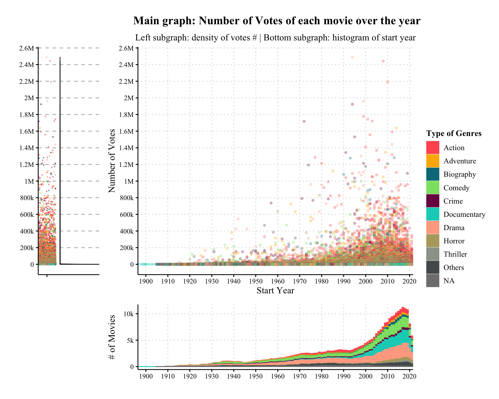
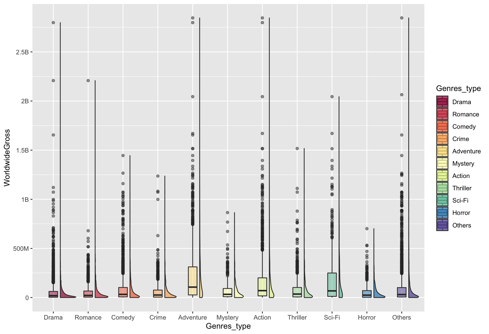

Chapter 5 Results
5.1 Who makes best movies

5.2 What specific features do movies with higher profitability have?
5.2.1 Genres effect

First, we can use the budget data provided by the-numbers to estimate the cost, and then combine it with box offices to calculate the revenue of each movie.
Through IMDB’s main data, we can analyze the genres of movies, popularity of the star/director/screenwriter, or the runtime of movies that can bring high profits.
5.3 What contributes to higher-rating films?
- In addition to using the same data as the first question, we can also use review data provided by Stanford to discover how people think when lots of people give high scores to a movie.
5.3.1 Not Genre

5.3.2 Popularity

5.4 Title Pattern
- Also, there might be some relationship between the rating volume and rating in IMDB’s scoring system.